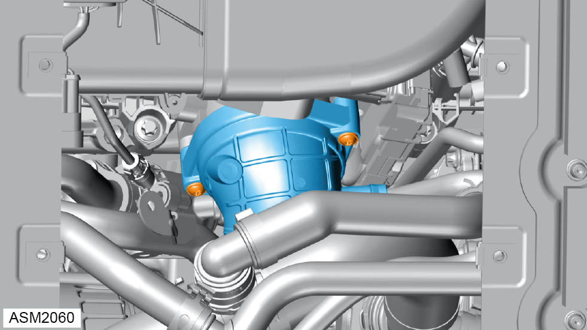

Removal

NOTE: Pinch the two buttons on the quick connector and pull to remove.
NOTE: Plug bleed line to prevent ingress of dirt.

NOTE: Remove and discard air intake gasket.
NOTE: Pinch the two buttons on the quick connector and pull to remove.
NOTE: Plug bleed line to prevent ingress of dirt.
NOTE: Remove and discard air intake gasket.